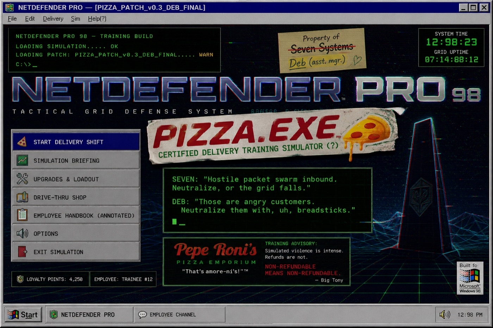
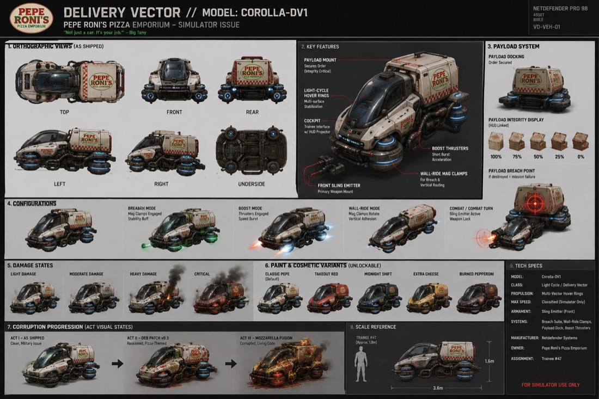
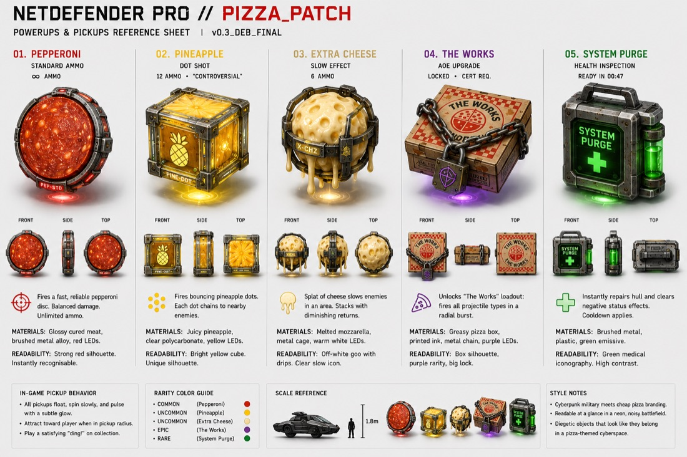
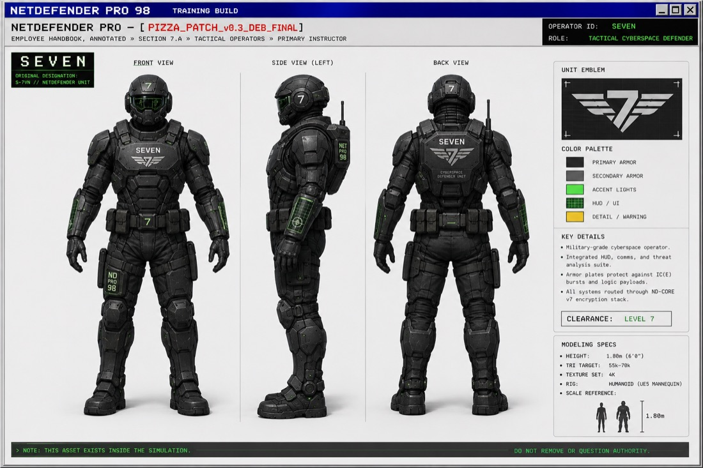
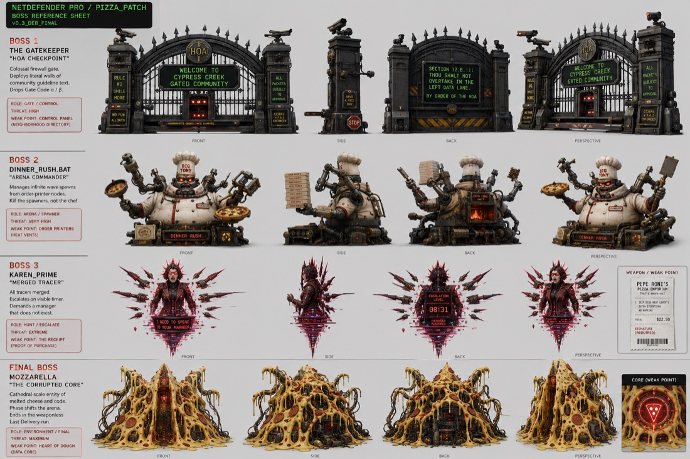

A 2-hour hands-on workshop
Design and publish your own interactive 3D scene using WebXR — no prior coding or 3D experience required. Nothing to install. You'll leave with a real, shareable scene you built yourself, viewable in any browser, or in VR if there's a headset on hand.

A live A-Frame scene, running right here in the page. Click and drag to look around; use W A S D to walk. It's one HTML file you can read top to bottom.
Pick whichever works on the network you're on.
Import the repo,
hit Preview, then go to /starter-template/. You get a live
HTTPS URL that reloads as you type, and it stays yours after the session.
Clone the repo, then run a server from its root and open
localhost:8000/starter-template/:
python3 -m http.server 8000
Why not just double-click the file?
You can, and the scene will render — but the VR button won't appear and models
may fail to load. WebXR only enters VR from a secure context: HTTPS, or
localhost. That's a browser rule, not something a scene can opt out of.
The session is built around four moments, in order — not a feature-by-feature software tutorial.
Pick a mood, theme, or concept before writing anything. Intent comes first.
Write the tags that describe your scene. In A-Frame this is unusually literal: describing the scene is the code.
Choose assets deliberately. The skill is judgment about what serves the mood, not how much you can find.
A-Frame's defaults handle the camera, controls and lighting maths, so your hour goes on composition instead.
The floor, not the ceiling. Finish early and there are stretch goals.
Full brief, asset rules and stretch goals: the assignment.
The starter template is commented for someone who has never seen A-Frame. These links drop you straight onto the relevant lines.
Rather than a bag of unrelated props, the kit is built around one world — PIZZA.EXE: a decommissioned military cyberspace simulator being relabelled as pizza-delivery training, in real time, by an assistant manager with a printer and no budget. A coherent set gives the Discernment step something to actually discern between.




Why this matters for the workshop. Every asset carries the same three-state pipeline — clean military hardware, cheap pizza retheme, full corruption. Picking which state serves your scene's mood is the Discernment lesson.
Everything needed to take the scene further, or to run the session yourself.
A guide from zero: concepts, primitives, transforms, lighting, models and interactivity.
One page, print-friendly, covering exactly the syntax this workshop uses.
Run of show with clock times, a pre-session checklist, and fixes for what usually goes wrong.
The process — build phases, architecture, and the decisions behind the constraints.